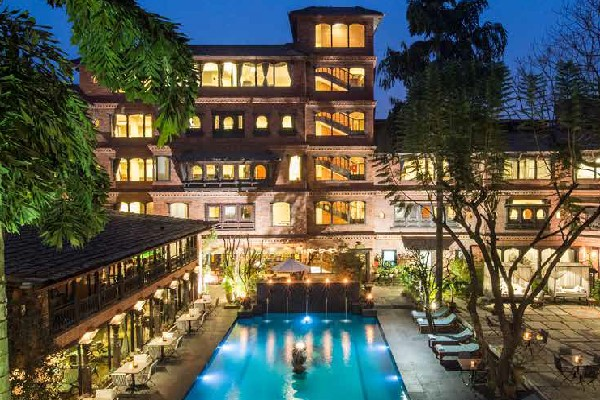

カトマンズはヒマラヤの山々に囲まれた盆地にあるネパールの首都です。この都市は、あらゆる観光客にとって繁栄しています。
カトマンズは、さまざまな寺院、修道院、仏塔などの宗教的建造物で特に有名です。
2015年の大きいな地震では市内の史跡の多くが破壊されました。
kathmandu/nepal
カトマンズはヒマラヤの山々に囲まれた盆地にあるネパールの首都です。この都市は、あらゆる観光客にとって繁栄しています。
カトマンズは、さまざまな寺院、修道院、仏塔などの宗教的建造物で特に有名です。
2015年の大きいな地震では市内の史跡の多くが破壊されました。
1.パターンダルバー
パタンダルバール広場はネパールのラリトプル市の中心に位置しています。
カトマンズ渓谷にある3つのダルバール広場の1つで、すべてユネスコの世界遺産に登録されています。
2.バクタプル
バクタプルダルバール広場は、カトマンズの東13kmにある現在のバクタプルの町、クホパとしても知られています。
古いバクタプル王国の王宮です。ユネスコの世界遺産に登録されています。
3.スワヤンブナート
スワヤンブナートはカトマンズにあるネパールの仏教寺院 です。
ネパール最古の仏教寺院ともいわれ「カトマンズの渓谷」のユネスコ世界遺産に登録されています。
1.アリアブティックホテル 
2.ハイアットリージェンシーカトマンズ
3.ドワリカのホテル 
1.ネパールカーナ
ダル、タルカリは有名なネパール料理です。ここで、ダルはレンズ豆を意味し、ご飯は米とタルカリを意味します。
カレーを意味します。漬物と一緒に肉とヨーグルトもあります。
2.ネパールのモモ,br>
桃子は実際には中華料理ですが、ネパールのカトマンズでは非常に人気のネワーリ料理です。モモは、ピクルスとソースが添えられた肉または野菜とチーズの団子です。
3.ナン・ロティ
ロティはネパールのパンで、温かい油でブレスレットとして丸く調理されています。ナンも小麦の一種です
土鍋オーブンで調理したパン。これらのパンはカレーによく合います。
ネパールでやるべきトップ7のリストをご紹介します。
大きな池、きれいなお寺が、壮大な山の風景に見どころを添えます。
そこに住む人々や風景に溶け込んでみましょう。
ヤクルは、ネパールのアンナプルナ山で大会される
世界最高の数日間のエンデューロレースです。
毎年秋には、約40人のライダーが
この冒険をすることができます。

ネパールに行ったならぜひ訪れたい、標高8848mにも
及ぶ世界最高峰の山エベレスト。ヘリコプターツアーなら体力のない
方も安心で、気軽にエベレストの散策や写真撮影を楽しむ
事ができます。
ボテコシ川ラフティングは、ネパールの短いホワイトラフティング
の1つです。ボテコシ川はネパールで最も速い川です。
ラフティングはやりがいのある冒険です。
Everyday morning 9:00am-22:00pm。
| やる事 | 値段 |
|---|---|
| バンジージャンプ | 6000rs |
| ラフティング | 7000rs |
| 樹木 | 7000rs |
| ヘリコプターツアー | 5000rs |

Adress:Kathmandu,Nepal
Ph.no.:+9779841860522
受付時間:7:00am-22:00pm